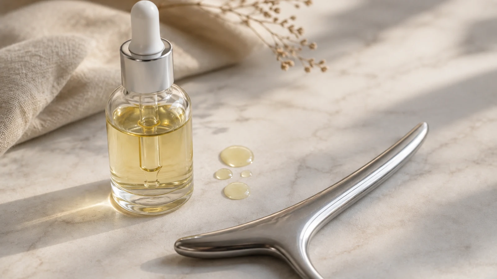

The Bojin Journal · The method
Where Does Bojin Fit With Retinol and Other Actives?

Students with serious skincare routines ask me this within the first week: "Where does bojin go, before my retinol, after it, a different night?" They expect a rule. I give them a check instead, because the true answer changes night to night with the one thing a fixed rule ignores: the current state of your skin barrier.
Why a fixed rule fails here
Retinol and exfoliating acids work by speeding up skin turnover, and while they work, they thin and sensitize the surface layer. That's the mechanism doing its job, not a side effect gone wrong. It also means the same cheek that welcomed a bojin session on Sunday may want nothing to do with a tool on Wednesday, two hours after a fresh layer of retinol. Same skin, same routine, different night, different answer.
Let the barrier's state decide the order, never the calendar. A calm, cushioned barrier handles a gentle session on the same evening as your actives. A compromised one, tight, flaking, stinging at plain moisturizer, is asking for rest. On those nights the kind choice is to skip the session, and skipping is part of doing this well.

The 15-second barrier check
Run this before your evening routine, in place of autopilot.

Press two fingers on your cheek
Cushioned and steady, or tight and a little raw? Most nights, this touch answers the whole question.
Look for the visible signs
Flaking, redness that lingers, a shiny stretched look. Any of these means the barrier is mid-repair and working hard.
Steady barrier: bojin first, active after
Work the session on clean skin, then apply your active afterward onto skin that's settled. That order keeps the tool off fresh product.
Compromised barrier: no session tonight
A tool over a freshly-thinned surface trades tomorrow's comfort for tonight's routine. Let the active work alone, and pick the practice back up on a rest night.
New to a strong active: hold bojin for two weeks
Skin adjusting to a new retinol or acid behaves unpredictably. Keep the two apart until the adjustment settles, then reintroduce sessions on off nights.
The rhythm that skips the guesswork
Most of my students land on a simpler arrangement: actives on their own nights, two to three bojin sessions on the others. Separate nights, no barrier math at the bathroom mirror, and the weekly bojin rhythm this method runs on anyway. The nightly check then matters only on the rare evening the schedule collides.
On the nights you combine them
Bojin goes first, on clean, product-free skin, with generous oil or moisturizer for glide. Never work dry over skin that's been reactive lately. The active goes on after, so it absorbs at its own pace on settled skin instead of being pushed around under a tool.
Your skin already tells you the answer every evening; the fifteen-second check just means you were listening. Ask it tonight before you reach for anything.
Quick answers
Can I use my bojin session to help retinol absorb better?
Keep them apart. A tool worked over fresh retinol pushes the active around on skin that's already more permeable, and neither the retinol nor your skin benefits from that. Practice bojin at another time of day, or on a night your active rests.
What about vitamin C or exfoliating acids?
Run the same barrier check. Vitamin C rarely compromises the barrier, so a same-day gentle session usually sits fine beside it. Acids thin the surface the way retinol does; give acid nights the same caution you give retinol nights.
How do I know if my barrier is compromised, versus just a little dry?
Compromised: tightness, visible flaking, redness that stays, or stinging when plain moisturizer goes on. Dry: a thirsty feeling that a good moisturizer settles within minutes. The second is fine for a gentle session. The first wants rest, not contact.
Should I switch to oil instead of my regular moisturizer on active nights?
On a reactive night, a plain fragrance-free facial oil earns its place: pure glide with no extra active in it. Your usual moisturizer works too, as long as it isn't the product carrying the retinol or acid itself.
See a barrier-friendly session
How much glide counts as enough, and what pressure a settled barrier takes comfortably, shows better on video than in text. My free 3-minute video runs a gentle session start to finish, calibrated for exactly this.
Watch the free 3-min videoYu-Ting Lan is a Taiwan-based international bojin instructor and the founder of Héhé Studio. She has taught her bojin method to more than a thousand students, from complete beginners to grandmothers, across Taiwan, Hong Kong, and Malaysia.